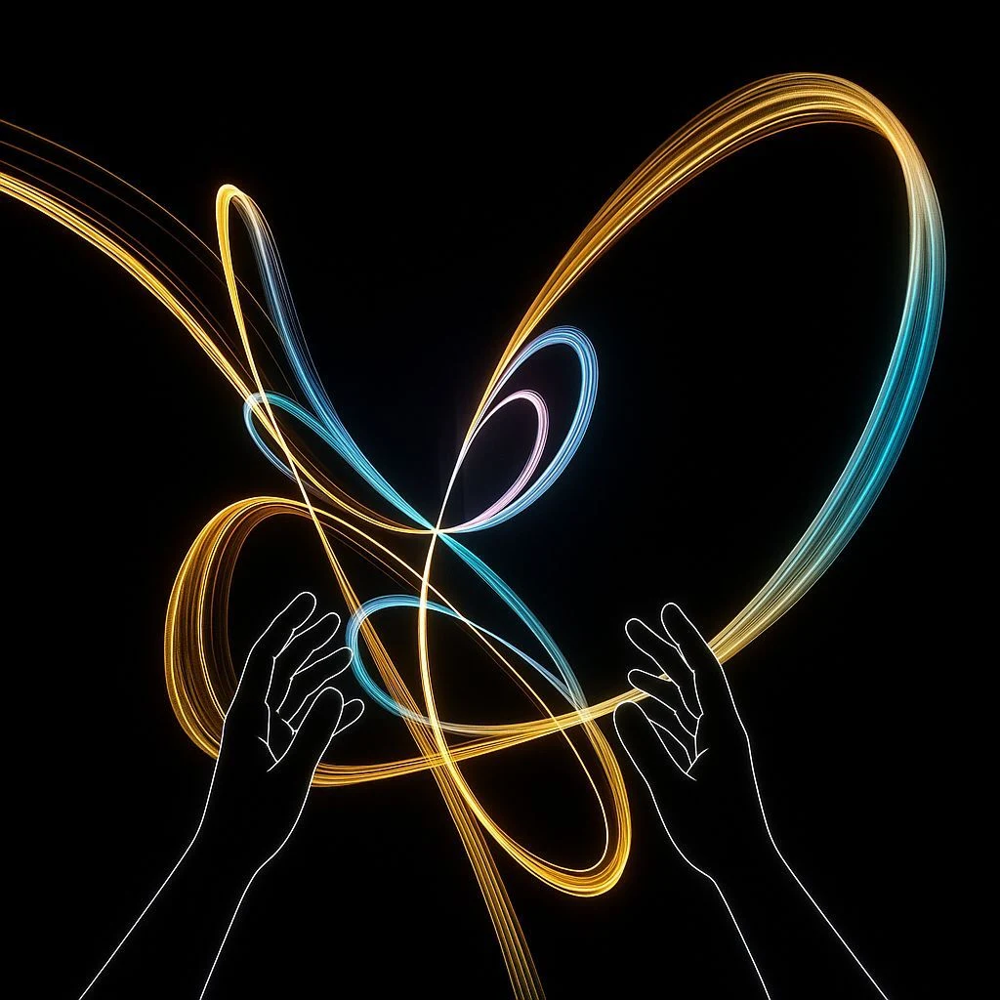
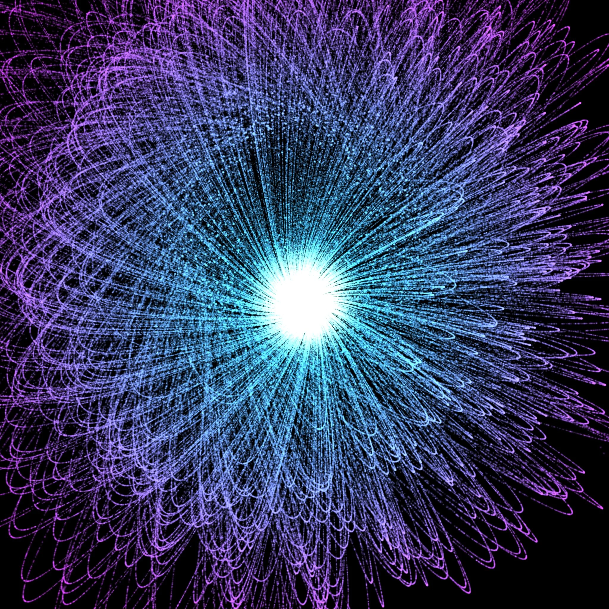
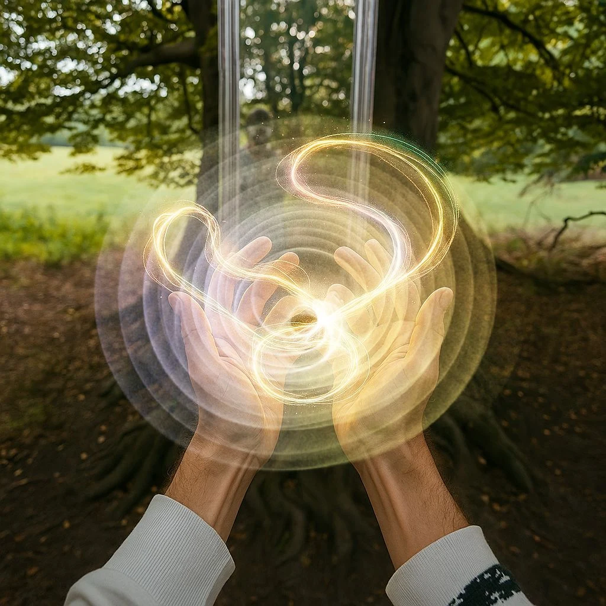
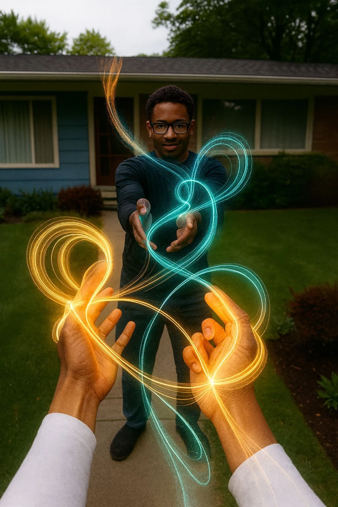
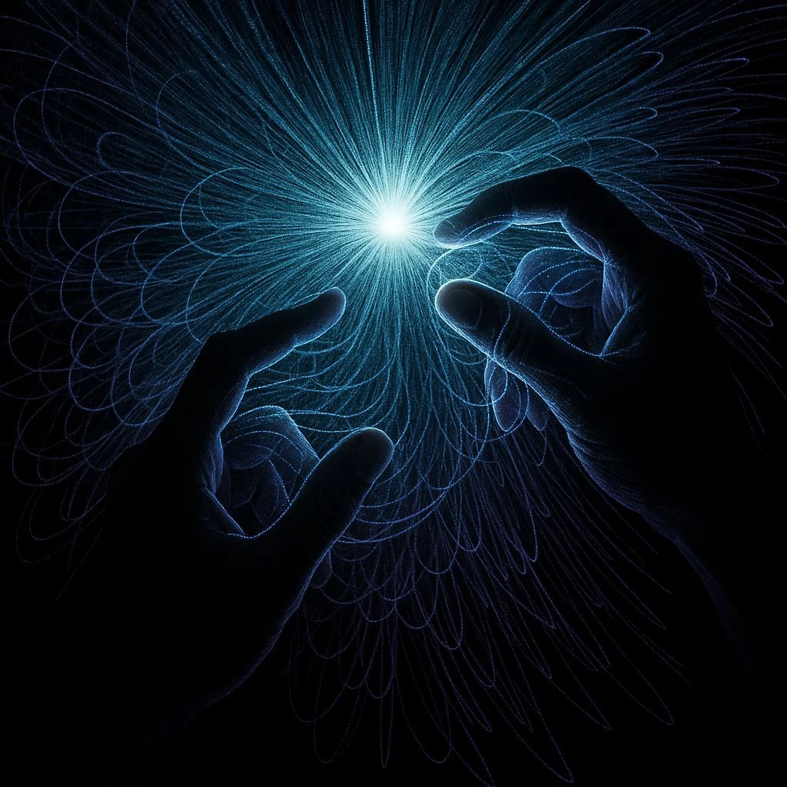
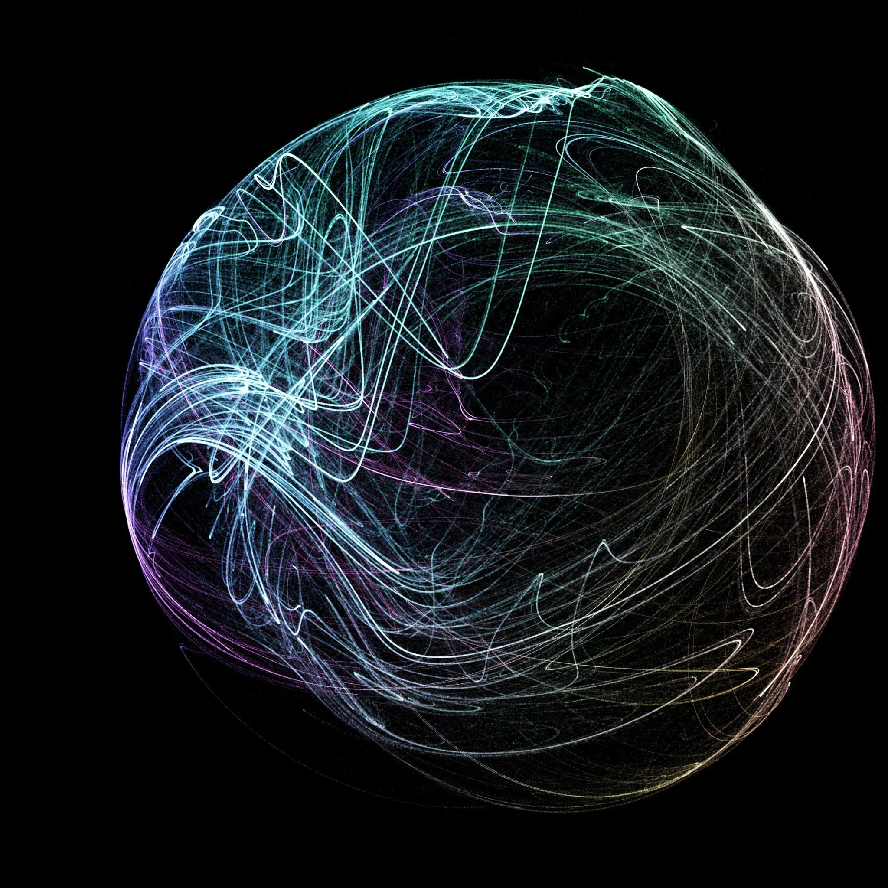
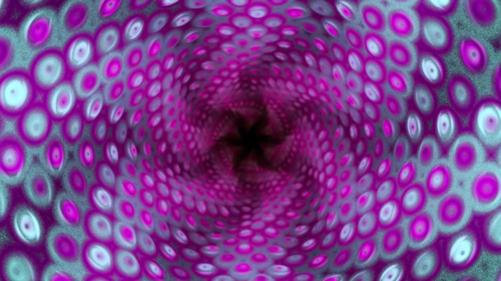
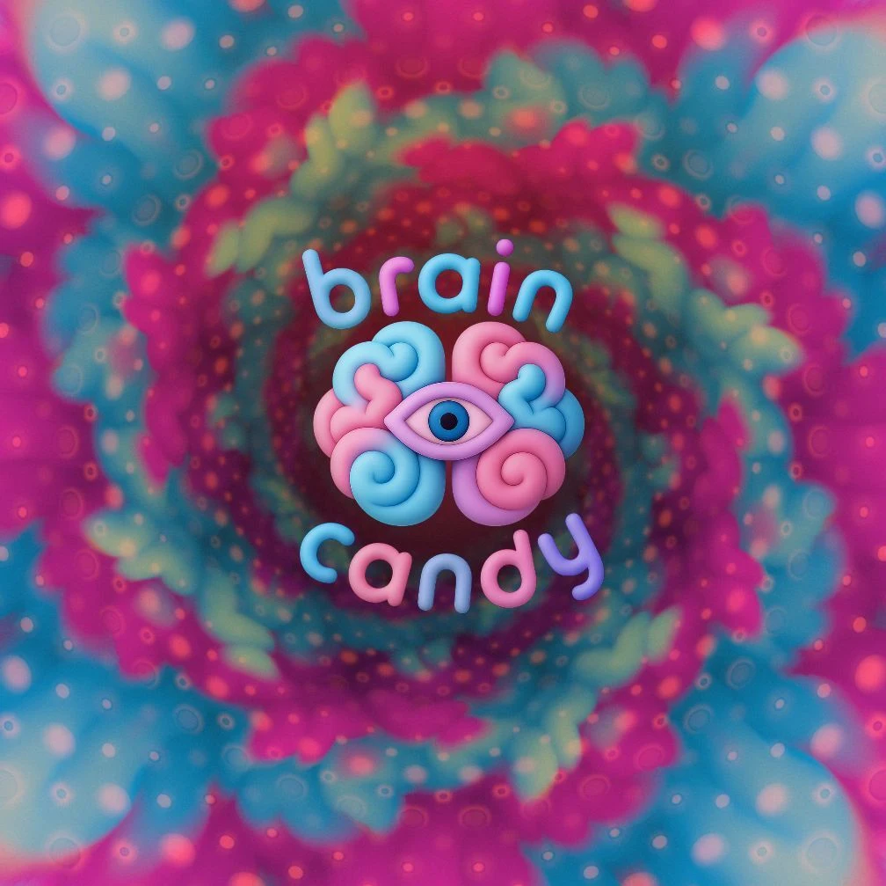

01Make a little magic.
Trade buttons for gestures. Shape flowing particles with the simplest movement of your hands.

A NEW KIND OF PLAY · IN DEVELOPMENT
Turn movement into magic. Sculpt light, bend particles, and lose yourself in a world that responds to you.
Discover the experience01 / THE EXPERIENCELET CURIOSITY LEAD.
What if you could hold a galaxy?
Or paint the air with light?
Magic Fingers is an invitation to play. Form glowing orbs of energy, stretch luminous threads between your fingertips, and send shimmering clouds swirling through space.
Your hands are the tools. The world is your canvas. See where a little curiosity takes you.

01Trade buttons for gestures. Shape flowing particles with the simplest movement of your hands.

02Step into a new universe, or imagine the everyday transformed into a playground of light.

03Our vision: a space to create, experiment, and discover unexpected moments together.
A glimpse of the vision. Concept imagery from the Magic Fingers project.
02 / SEE IT IN MOTION

The film is on its way. Stay curious.
03 / THE VISION
We’re building toward an experience that feels instinctive, expressive, and endlessly surprising.
Currently taking shapeHand tracking and gesture-based spells turn natural movement into a language of light.
Music-responsive visuals that pulse, ripple, and flow with sound.
A vision for collaborative creation, where a friend’s imagination can meet your own.
04 / THE PEOPLE BEHIND THE PARTICLESART × TECHNOLOGY × WONDER
From the creator of Cosmic Sugar.
Magic Fingers is a Light Clinic project, bringing together immersive art, creative technology, and a fascination with how experiences make us feel.
Say hello to Light Clinic
A universe of particles.

Spaces for a quieter mind.

Sound, light, and altered states.
SOMETHING WONDERFUL IS TAKING SHAPE.